Clion 下 ESP-IDF 的配置与开发#
clion 简介#
clion 是 jetbrain 公司开发的 C/C++ IDE 集成开发工具，具有如下优点：
完善的开发环境：
指 ESP-IDF 工程的建立，配置，编译，调试，量产等基础操作的环境。一个优秀的编程环境可以让开发体验直线上升，工作事半功倍，而 Clion 恰是我们 C 语言开发的优秀编程环境！
代码辅助
使用对 C 和 C++ 有深刻理解的编辑器，您便可以高效地读写代码。 可在智能补全功能中按类型筛选出补全结果。 使用路径导航来跟踪您在范围层次结构内的位置。 借助参数名称提示，深入了解函数调用。 查找符号的上下文用法，或通过键入其名称直接跳转到该符号。 CLion 甚至可以确保您的代码符合编码指南，包括格式、命名等要求。
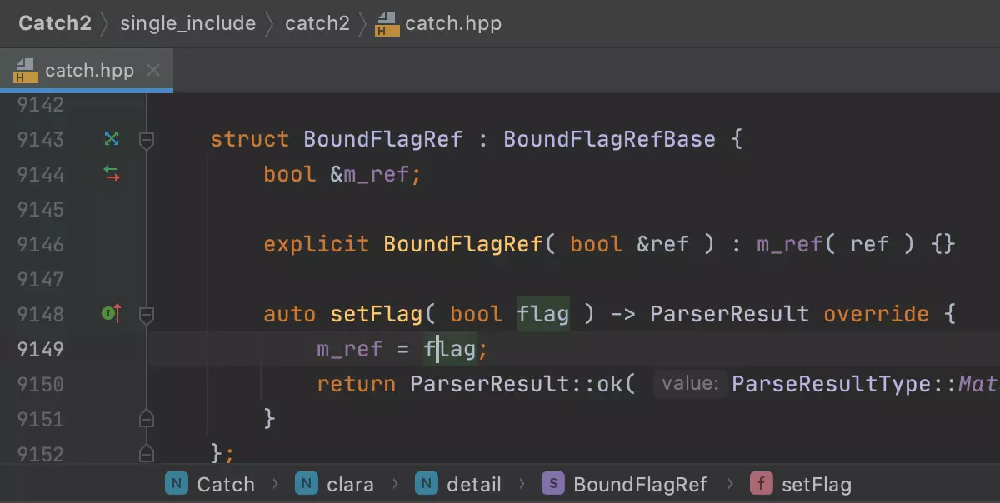
代码生成
立即生成大量样板代码。 使用简单的快捷键重写和实现函数。 生成构造函数和析构函数、getter 和 setter 以及相等、相关和流输出运算符。 使用语句包装代码块，或者从用法生成声明。 创建自定义活动模板以在整个代码库中重用典型代码块，从而节省时间并使样式保持一致。 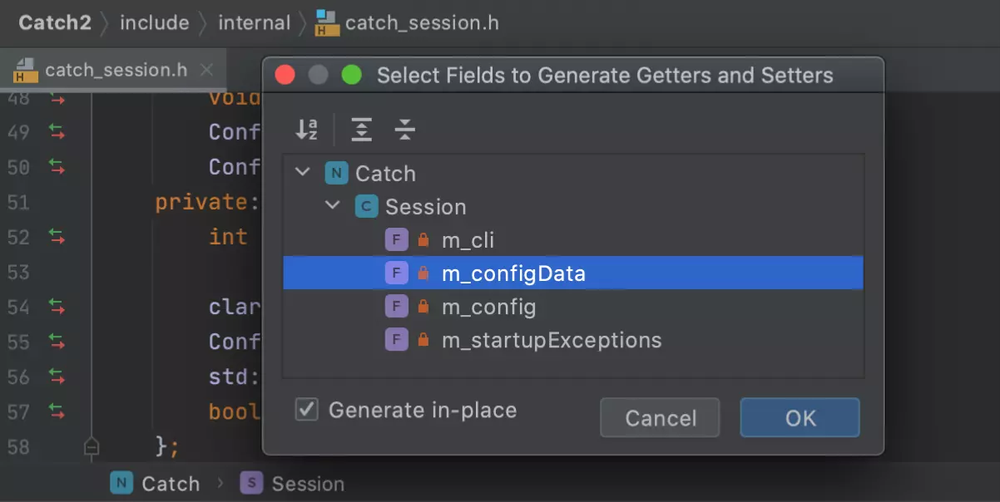
安全重构
重命名符号，内联函数、变量或宏，在层次结构中移动成员，更改函数签名，以及提取函数、变量、参数或 typedef。 无论您使用哪种自动重构，都请放心，CLion 能够安全地在整个代码中传播相关变更。
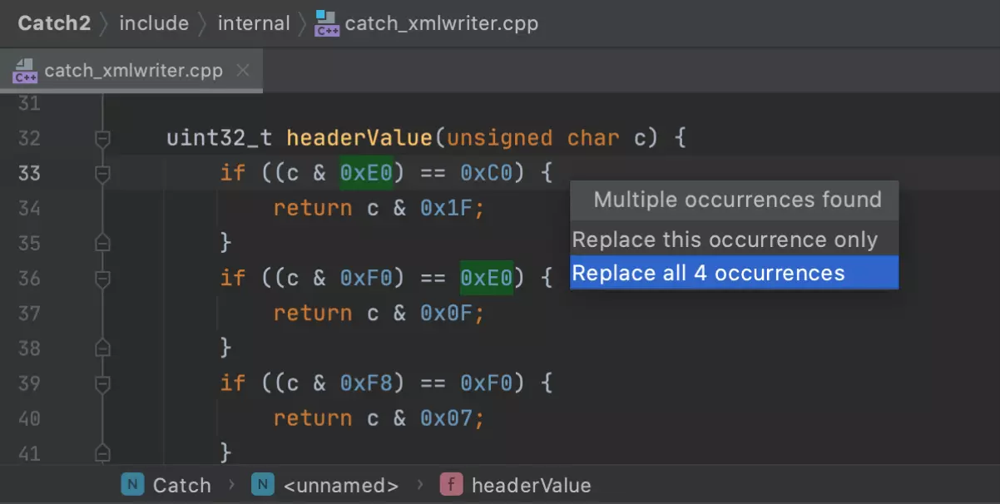
快速文档
检查脱字符号下的代码即可了解任何信息：函数签名详细信息、审查评论、预览 Doxygen 样式文档、检查针对缺少显式类型的符号推断出的类型，以及查看正确格式化的最终宏替换。
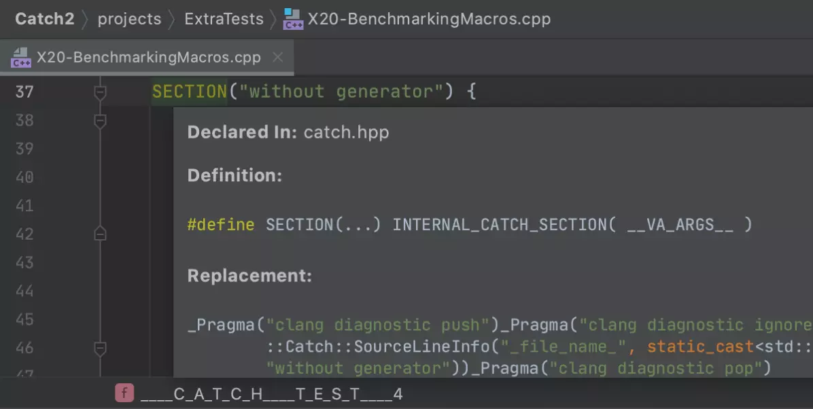
Clion 及插件安装#
安装 clion#
clion 可以在官方网站获取并安装，在 ubunbu 下，安装 cion 又两种方法，分别如下：
命令行安装
sudo snap install clion --classic
在 Ubuntu 自带应用商店 snap 中搜索一键安装
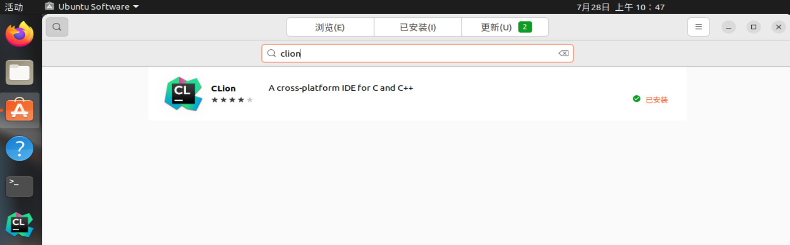
添加插件#
点击
setup | plugin，搜索 Chinese，选择 中文语言包 并下载安装安装完成后会提示重启 IDE，重启后便显示中文
在插件处搜索 Serial，选择 Serial Port Monitor 并下载安装
这是串口调试器插件，集成在 IED 内非常好用
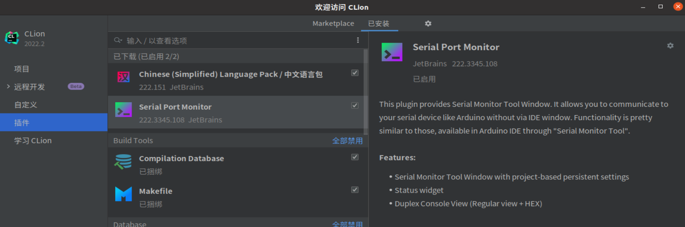
实验步骤#
要从空白开始实现一个项目，需要两个工具：
基于命令行的
idf.py项目管理工具编码，调试使用的
Clion集成开发环境。
创建项目#
现在，您可以开始准备开发 ESP32 应用程序了。假设我要重头开始创建 hellow-world 工程
# 进入项目目录
cd ~/code/$GROUPNAME/esp32/
# 获取idf所需的环境和工具
get-idf
# 创建hellow-world工程
idf.py create-project hellow-world
# 检查下目录下发生了什么
tree -L 2
❗注意：
ESP-IDF 编译系统不支持带有空格的路径！！！
连接设备#
现在，请将 ESP32 开发板连接到 PC，并查看开发板使用的串口。
我们使用的 ESP-WROVER-KIT 开发板一般会有如下两个 ttyUSB 口：
数字较小的为 JATG 接口，较大的为串口接口。
ls -l /dev/ttyUSB*
crw-rw----+ 1 root plugdev 188, 0 7月 27 14:31 /dev/ttyUSB0
crw-rw----+ 1 root plugdev 188, 1 7月 27 14:31 /dev/ttyUSB1
此处的用户群组 plugdev 可能会有出入，具体原因是对JAGT进行了 USB 驱动配置，会在下一章 ESP-IDFJTAG 调试流程 中提及。
请记住串口名，在下面的步骤中会使用到。
设置目标芯片#
打开一个新项目后，应首先设置“目标”芯片 。乐鑫有 esp32, esp32-s2, esp32-s3,esp32-c 以及 esp32-h 等多种架构
# 我们的开发版目标芯片是ESP32
idf.py set-target esp32
# 检查下目录下发生了什么
tree -L 2
配置项目参数#
运行工程配置工具 menuconfig。
idf.py menuconfig
注意，此操作将清除并初始化项目之前的编译和配置（如有）。 也可以在后续步骤中再 clion 中实现该步骤的设置。
在 clion 中打开项目#
打开 clion，然后依次
文件|打开在对话框找到你刚才创建项目的目录
点击
cmakelists.txt这个文件，点击打开在弹出的对话框选择
作为项目打开
配置项目环境变量#
系统变量#
需要配置 esp-idf 的工具到系统环境变量，以便 clion 正确的使用这些工具。执行如下操作
设置-|构建、执行、部署|工具链，在对话框右上角点击
添加环境|来自文件选择你的 esp-idf 的环境脚本文件，如：
/home/iot/esp/esp-idf/export.sh
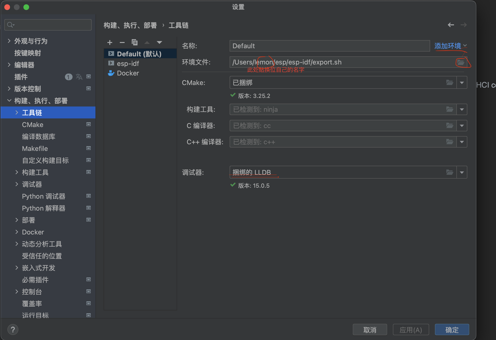
用户变量#
需要添加如下几个用户变量
名称 |
值 |
|---|---|
ESPBAUD |
115200 |
ESPPORT |
/dev/ttyUSB1 |
IDF_PATH |
/home/iot/esp/esp-idf |
❗ 注意
ESPBAUD 是波特率，默认 115200；ESPPORT 是串口的引脚，一般为数字较大的那个，具体根据实际情况填写，一般为 1 或 2
IDF_PATH 一般默认如上表填写，实际上是安装的 ESP-IDF 的目录，自行构建环境的同学目录还可能带有-4.4.1 这种版本号
添加过程如下图所示：
设置|构建、执行、部署|cmake点击下方
环境选项的编辑按钮，在弹出的对话框，点击+号填写名称和值
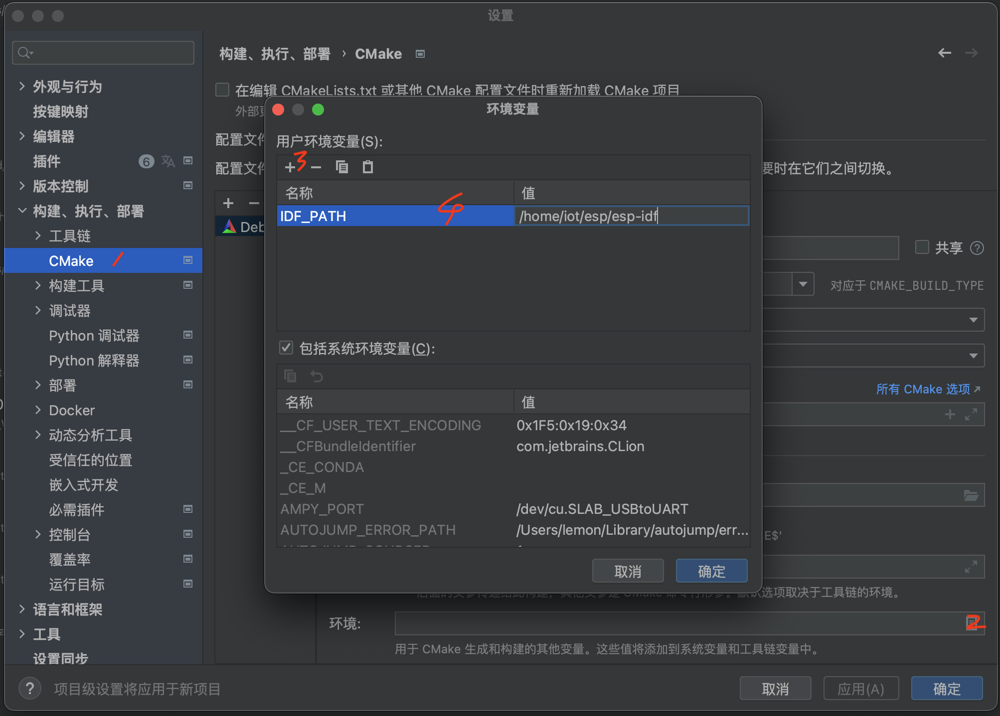
请下载 MOV 文件播放演示。
<video src=“../IMG/config-env.mov”>
注意：在环境文件名下写 export.sh 所在的真实目录
代码编写#
在 clion 中进行代码编写，充分发挥 clion 的功能。
编译、烧录、监视#
右上角调试配置工具栏是调试和配置的重要工具，如下图所示，左侧小锤子图标代表构建，右侧三角图标代表运行。下拉图标中有各种运行配置（esp-idf 的各种构建目标），其中最重要的就是，编译、烧录、监视运行几个常见配置目标。即： hello_world(工程名).elf、flash、monitor。其他不需要的配置选项，可以在编辑配置中 用 - 号 删掉。

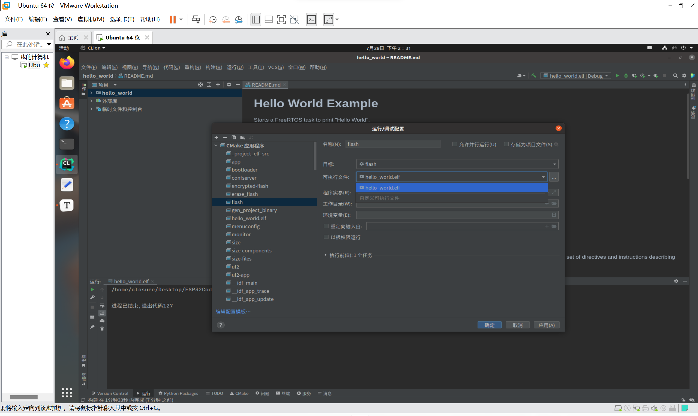
编译工程文件#
选择hello_world.elf，点击构建运行编译，如果一切正常，编译完成后将生成 .elf 文件。
烧录到设备#
选择flash，点击构建。跟在终端烧录一样，当下方消息框出现如图所示连接中的情况的时候，请按下板子的 boot 按键直到烧录开始再松开。
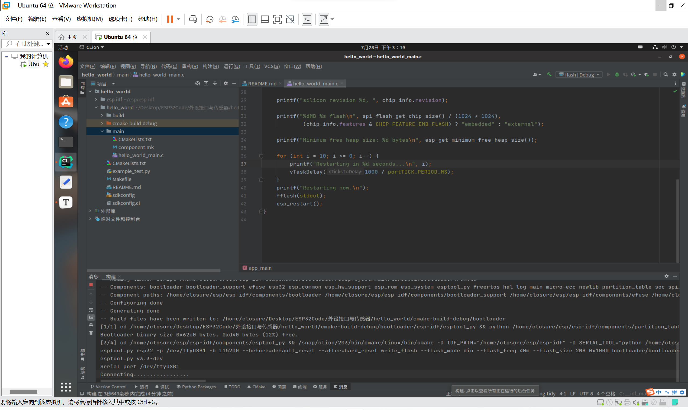
运行监视器查看串口日志输出#
选择monitor执行构建，就能看到如下图的日志输出啦！
点击 红色方块 即可终止退出。
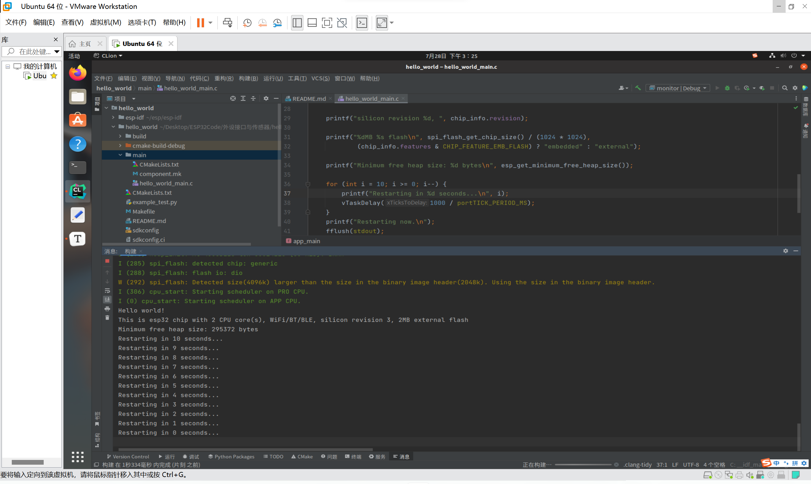
JTAG Debug#
JATG 配置#
点 运行/调试配置 框左上角添加新配置，找到 嵌入式 GDB 服务器 进行添加
名称： 默认不用更改，也可改为自己想要的名称；
目标： 默认不用更改；
可执行二进制文件选择对应工程名的 elf 文件。
调试器
/home/Ubuntu用户名/.espressif/tools/xtensa-esp32-elf/esp-2021r2-patch3-8.4.0/xtensa-esp32-elf/bin/xtensa-esp32-elf-gdb
下载可执行文件：无
‘target remote’:
tcp:127.0.0.1:3333
GDB 服务器：
/home/Ubuntu用户名/.espressif/tools/openocd-esp32/v0.11.0-esp32-20211220/openocd-esp32/bin/openocd
GDB 服务器实参：
-f board/esp32-wrover-kit-3.3v.cfg -c "init;reset halt;"
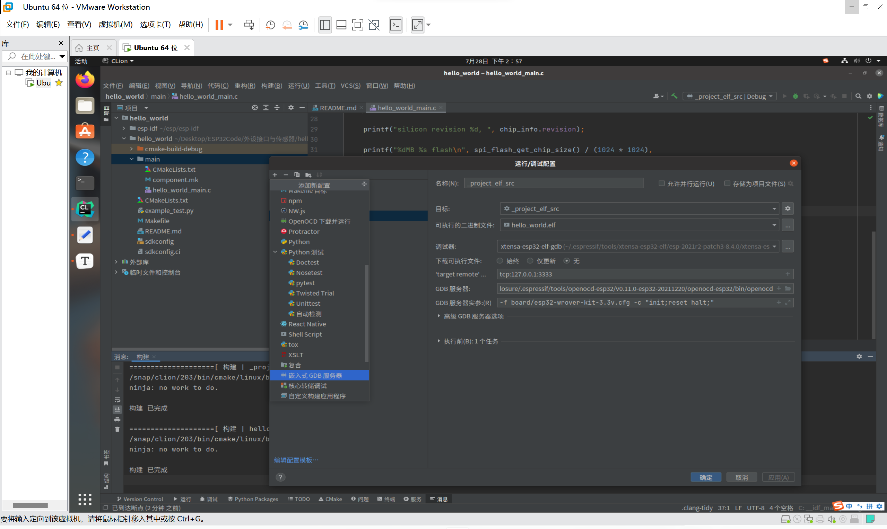
调试#
先在希望程序中断运行的语句所在行打上断点，在所在行行数数字旁边空的区域单击，即可看见该行高亮并且带有红点
再选择设置好的 JTAGDebug 并点旁边的 ‘’小虫子‘’ 按键进行 Debug，执行后会如下图所示：
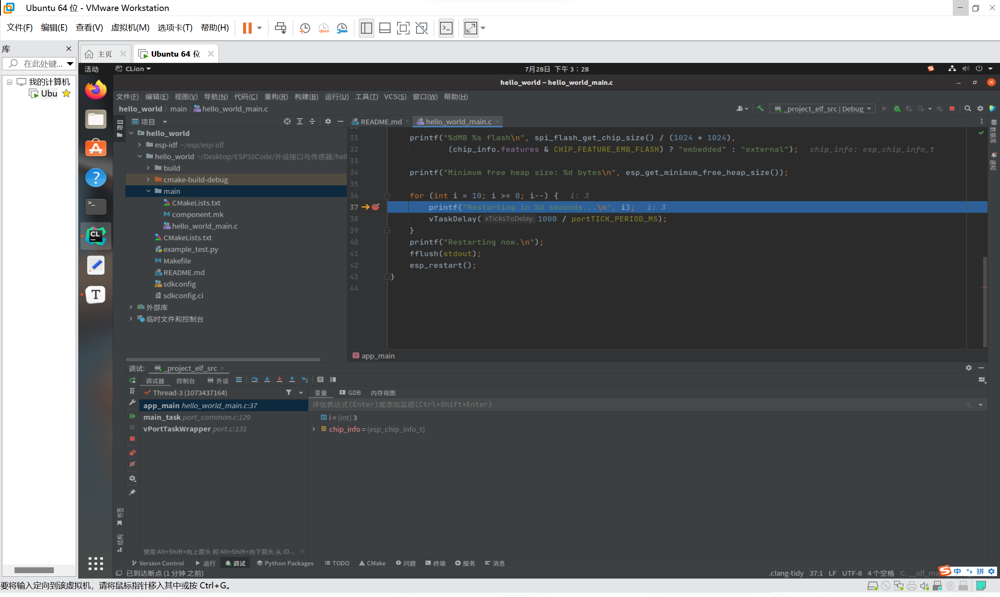
我们能清楚的看到变量的情况以及类型等，更复杂的语句还有更多显示。
调试框边上的各个按键同学们可自行查看并学习用法。
点击 红色方块 即可终止退出。
至此 Clion 下 ESP-IDF 的配置与开发已经完成！